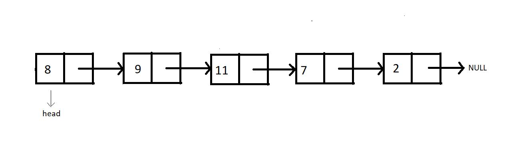
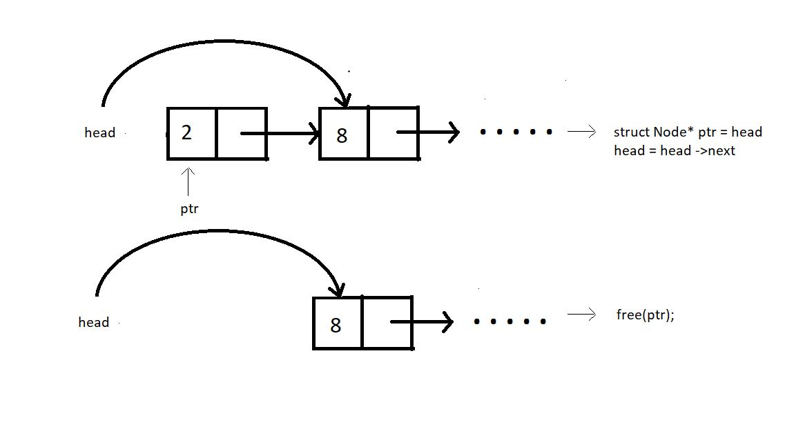
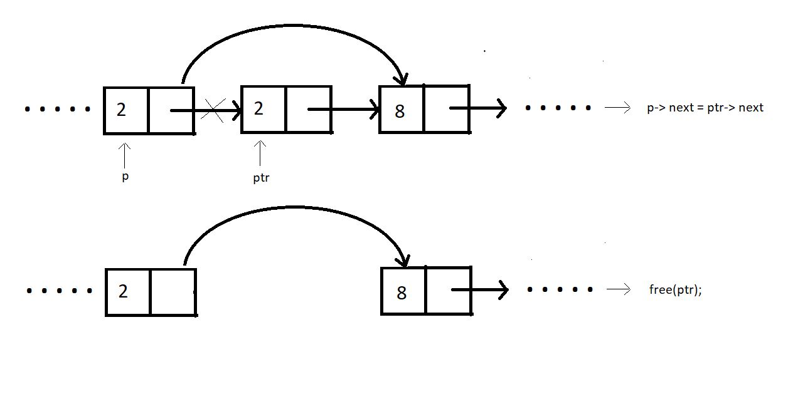
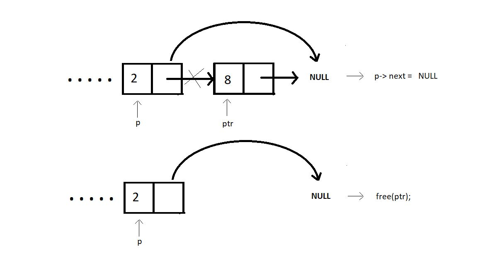
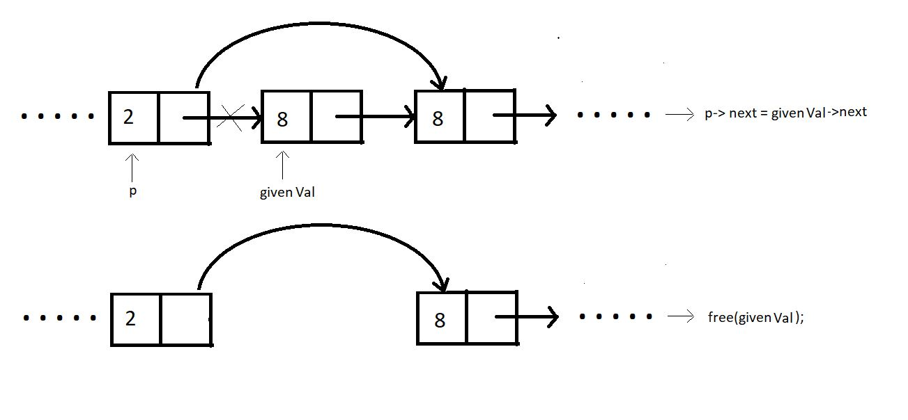

Consider the following linked list:

Deletion in this list can be divided into the following categories.
In order to delete the node at the beginning, we would need to have the head pointer pointer to the node second to the head node, that is, head->next. And we would simple free the node that's left.

struct Node * deleteFirst
(struct Node * head){
struct Node * ptr = head;
head = head->next;
free(ptr);
return head;
}
Assuming index starts from 0, we can delete an element from index i>0 as follows:
Bring a temporary pointer p pointing to the node before the element you wan to delete in the linked list.
Since we want to delete between 2 and 8, we bring pointer p to 2.
Assuming ptr points at the element we want to delete.
We make pointer p point to the next node after pointer ptr skipping ptr.
We can now free the pointer skipped.

struct Node * deleteAtIndex(struct Node * head, int index){
struct Node *p = head;
struct Node *q = head->next;
for (int i = 0; i < index-1; i++)
{
p = p->next;
q = q->next;
}
p->next = q->next;
free(q);
return head;
}
In order to delete an element at the end of the linked list, we bring a temporary pointer ptr to the last element. And a pointer p to the second last. We make the second last element to point at NULL. And we free the pointer ptr.

struct Node * deleteAtLast(struct Node * head){
struct Node *p = head;
struct Node *q = head->next;
while(q->next !=NULL)
{
p = p->next;
q = q->next;
}
p->next = NULL;
free(q);
return head;
}
Similar to the other cases, ptr can be deleted for a given value as well by following few steps:
p→next=givenValue→next;
free(givenVal);
Since, the value 8 comes twice in the list, this function will be made to delete only the first occurence.

struct Node * deleteByValue(struct Node * head, int value){
struct Node *p = head;
struct Node *q = head->next;
while(q->data!=value && q->next!= NULL)
{
p = p->next;
q = q->next;
}
if(q->data == value){
p->next = q->next;
free(q);
}
return head;
}
Learning about the time complexity while deleting these nodes, we found that deleting the element at the beginning completes in a constant time, i.e O(1). Deleting at any index in between is no big deal either, it just needs the pointer to reach the node to be deleted, causing it to follow O(n). And the same goes with case 3 and 4. We have to traverse through the list to reach that desired position.